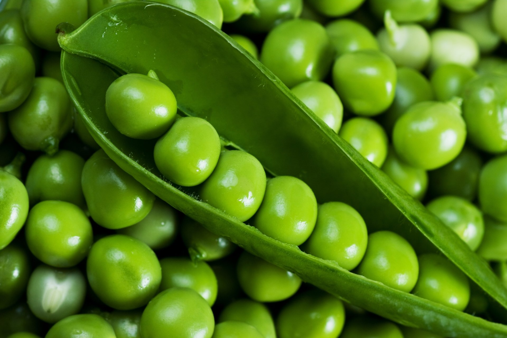
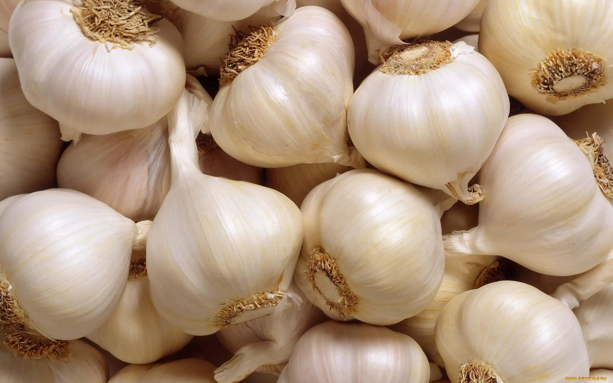

Tomatoes
- Planting time: February to March in a greenhouse or late March to early April if growing outside
- Can this be grown in pots: Yes
- How to grow: Place your seed in a small pot of compost and lightly cover with a thin layer of compost. Water well and place in a warm spot. After two or three weeks, move the seedling to a larger pot. Water regularly and once the plant begins to bear fruit, water once a week with a high potassium liquid feed.
- Recipe suggestions: Enjoy the taste of your home grown tomatoes in a simple salad or if you've got a glut of them, tomato and basil soup is a great idea.
Chillies
- Planting time: February to April
- Can this be grown in pots: Yes
- How to grow: Place your seed in a small pot of compost and cover with a thin layer of compost. Water well and within a few weeks your seedling should appear. Heat aids germination so place your pot somewhere warm. When you see roots appear in the bottom of the pot, move your plant into a bigger pot. Take care not to overwater and when in flower, feed weekly with a high potassium liquid fertilizer.
- Recipe suggestions: If you dry your chillies, they can be used all year round to add a little heat to any recipe.

Potatoes
- Planting time: March to July
- Can this be grown in pots: Yes
- How to grow: Rather than from seed, potatoes are grown from tubers that have been 'chitted'. Plant your tubers around 5in deep; once the shoots start to emerge, you need to 'earth' them buy adding more compost on top. Repeat this process several times. As a rough guide, potatoes take around 12 weeks to fully grow.
- Recipe suggestions: Potatoes can be boiled, roasted, mashed or made into chips. They are a great source of potassium and vitamin C.

Peas
- Planting time: February to June
- Can this be grown in pots: Yes
- How to grow: Sow your peas in modules, around 2cm deep. Once they reach around 2in tall, plant them in their final planing position. Water regularly and ensure that they had adequate support as they grow taller. Netting is ideal for this.
- Recipe suggestions: Eat them straight off the plant for a good boost of vitamins C and E. Or add to stews, soups or a stir fry.

Garlic
- Planting time: October to February
- Can this be grown in pots: Yes
- How to grow: Plant the cloves about 1in deep and 6in apart, with the tip facing upwards. Water when the soil is dry but take care not to overwater as this can rot the bulb. Remove any flowers that appear to ensure all the energy is put into producing the bulb. When the foliage turns yellow, this is a sign that the bulb is nearing maturity.
- Recipe suggestions: Garlic adds a lovely flavour, maybe add it to a curry or even add the leaves to a salad.
Pumpkin
- Planting time: April to May
- Can this be grown in pots: No
- How to grow: Seeds should ideally be started indoors, with heat aiding germination. Sow your seeds around 1cm deep and lay them on their side to reduce the risk of the seed rotting. After the last chance of frost has passed, harden the plants off by placing them outdoors during the daytime and then returning them inside at night-time. Do this for one week before planting into their final positions. Water regularly and as the pumpkin grows, ensure it is adequately supported and not on wet earth to reduce the risk of it rotting.
- Recipe suggestions: Pumpkin can be used in soups, stews or even pumpkin pie. Growing your own pumpkin for Halloween is always fun to do!
Courgette
- Planting time: April to June
- Can this be grown in pots: Yes
- How to grow: If sowing early in the season, start the seeds of indoors or in a greenhouse. Sow your seeds approximately 1.5cm deep, with the seed positioned on it's side. Plant out around the end of May when the last chance of frost has passed. Courgettes can grow into quite large plants so ensure that plants are placed arounf 45cm apart. Water regularly and feed every week or two with a high-potassium liquid feed. Harvest as soon as they are ready as this will encourage more growth on the plant.
- Recipe suggestions: Chop and roast your courgettes for a tasy side dish or if you fancy something sweeter, try a courgette cake!
Aubergine
- Planting time: January to April
- Can this be grown in pots: Yes
- How to grow: Seeds will germinate better in a warm environment, a heat mat is ideal for this. Sow seeds around 0.5cm deep and water well. Plant out in a sunny spot, after the last chance of frost has passed. This is usually around the end of May or early June. Plants can become top heavy so ensure that they are adequately staked. Harvest the aubergine once ripe, this will usually be around August time.
- Recipe suggestions: Stuffed aubergines can be a great starter dish or it also makes a fantastic baba ghanoush.
Broadbeans
- Planting time: February to May
- Can this be grown in pots: Yes
- How to grow: Sow your beans approximately 5cm deep in a small pot, water well and place in a sunny warm spot in the greenhouse. Hardy varieties can be sown direct outdoors, ideally in a spot with free draining soil. When planting out, keep a 20cm spacing between plants. Water regularly, especially if you're growing in a pot. They should be ready to pick from late spring. Towards the end of the season, if you leave some pods on the plant, they will provide you with beans to sow next year!
- Recipe suggestions: Broadbeans are great in a salad or can even be made into a dip. The tips of the plant could even be made into a pesto.
Broccoli
- Planting time: April to July
- Can this be grown in pots: Yes
- How to grow: Sow indoors from April and direct sow outdoors from May, seeds should be sown 2cm deep. Water your plants regularly, and ensure they are positioned in a sunny spot. It is advisable to cover with netting, to protect your plants from birds. Harvest when the heads are formed, but ensure that they are not allowed to flower. The first head picked with be followed by more, slightly smaller heads.
- Recipe suggestions: Simple boiled, broccoli is tasty and full of nutrients and vitamins. Add a few gravy granules to the water used to make a tasty gravy.
Brussel Sprouts
- Planting time: March to May
- Can this be grown in pots: Yes<
- How to grow: Sow in modules and plant out after the chance of frost has passed. Brussel sprouts are slow growing and can take up to 30 weeks to produce a crop. Water your plants regularly and feed with a nitrogen rich fertiliser. Place your plants in a sunny spot for best results. Harvest as soon as they are ready.
- Recipe suggestions: For a super healthy low fat meal, turn into a soup. Or try turning into sauerkraut for a gut healthy snack.
Carrots
- Planting time: February to July
- Can this be grown in pots: Yes
- How to grow: Carrots grow best in free draining soil, if your soil is heavy clay, consider growing in a container. Seeds should be sown 1cm deep. Carrots are ready for harvest approximately 12-16 weeks after sowing. Carrot fly can be a problem, covering your plants with horticultural fleece can help to prevent this.
- Recipe suggestions: Homegrown carrots taste great simply boiled with a little butter. Or for a treat with a warm drink, carrot cake is a great choice.
Cucumber
- Planting time: March to June
- Can this be grown in pots: Yes
- How to grow: Sow cucumber seeds in a small pot on their side 1-2cm deep. For better germination, place in a warm sunny spot as cucumbers like the warmer weather. If growing in pots, increase the pot size as soon as roots are visible at the bottom of the pot. Ensure the plants have adequate structure to keep them supported. The fruits are ready for harvest when they are of a good colour and the ends are slightly rounded.
- Recipe suggestions: sFresh cucumber tastes lovely in a salad or can be eaten as a tasty snack. Your homegrown tzatziki will taste amazing with your homegrown cucumber.

Onions
- Planting time: March to April and October to March
- Can this be grown in pots: Yes
- How to grow: Onions can be grown from seed but are usually grown from sets, as this is easier and growth is faster. Plant the sets around 2cm deep, spaced 15 cm apart. Keep the area weed free and water regularly. When the foliage turns yellow, this is a sign that your onions are ready to be harvested. Use a fork to gently lift the onions, to prevent any damage.
- Recipe suggestions: Onions are a staple of many recipes so these are a great thing to grow. Perhaps try making an onion chutney or maybe a french onion soup.

Peppers
- Planting time: February to April
- Can this be grown in pots: Yes
- How to grow: Sow your seeds in a small pots with a thin layer of compost over the top. Heat aids germination so place your pots in a warm, sunny spot. As peppers require full sun and warmth, growing in a greenhouse or on a kitchen window sill is a better option than growing outdoors. As the roots of your plants fill the bottom of the pot, move them into a larger pot with more compost. Water regularly, however take care not to over water. Your plants may require staking if there are many or large pepppers. Harvest when the colour turns from green, picking as soon as possible gives your plant more time to develop more fruit.
- Recipe suggestions: Stuffed peppers filled with cous cous and mozarella cheese makes a great starter idea. Or make them the start of the show in a red pepper soup, served with homemade crusty bread.
Sweetcorn
- Planting time: April to June
- Can this be grown in pots: Yes
- How to grow: Sweetcorn grows best in warm conditions so sow your seeds indoors in modules. Sow your seeds around 2.5cm deep and water well. Position your plants in a sunny spot, ideally sheltered from strong winds. As your plants may grow quite tall, ensure you have adequate support to protect them from wind damage. Wind pollination is required for your sweetcorn plants, a trick is to tap the tops of the plant when the male flowers appear, the pollen can them pollinate the female flowers. When the stringy ends of your cobs turn brown this a sign that your sweetcorn is ready for harvesting. Peel back the husk and check that the cob is fully ripe before removing from the plant.<
- Recipe suggestions: Keep it simple and enjoy it grilled on the bbq with a knob of butter. Or perhaps try making a vegan-friendly sweetcorn chowder.

Sunflowers
- Planting time: March to May
- Can this be grown in pots: Yes
- How to grow: Sow seeds around 1cm deep in small pots and water well. Sunflowers like to grow in a sunny spot, in well drained soil. Protect your seedlings from slugs and snails by placing coppers rings around the base of your plants. As they can reach heights of 4 metres and the sunflower head can become heavy, it is essential to have supports in place to tie your plant into. If you choose not to pick your sunflowers, the seed head will eventually dry out and the birds will love collecting the seeds.
- Recipe suggestions: A recent trend has been to grill a sunflower head and season with herbs and spices. Why not give it a go, it will definitely be a talking point at your summer BBQ!